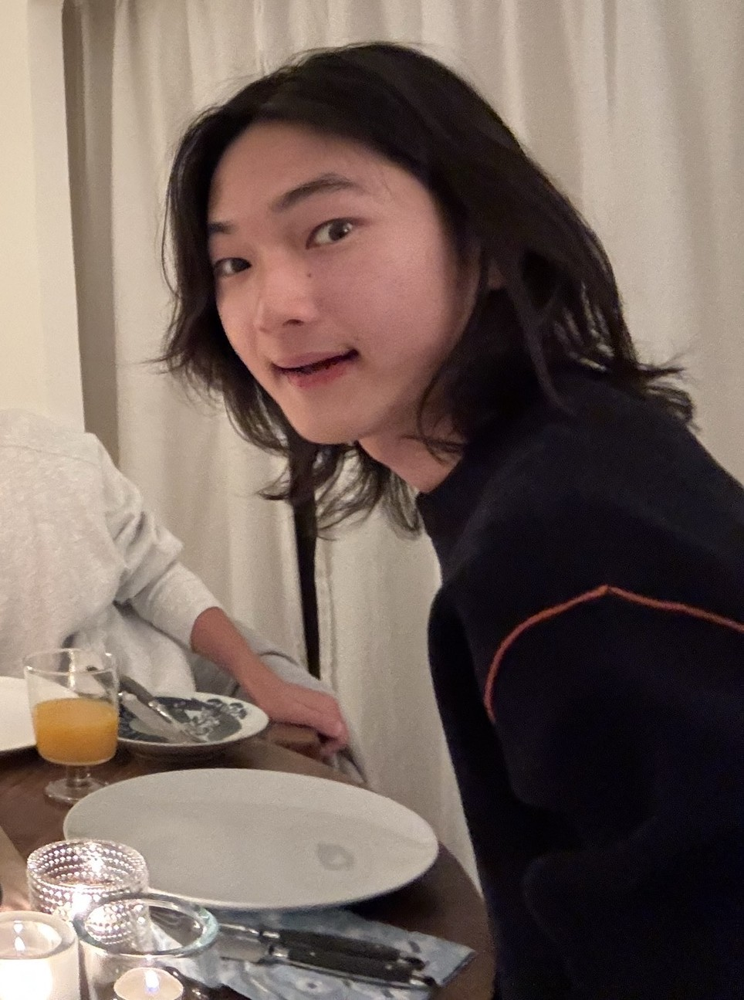

About Me

Hello! I'm Kohrin Suzuki from Japan. Now I'm studying programming at TAFE in Perth. It expected to finish on Dec of
2027.
Currently, I have been working on my own project, which is website and MAUI application development in free time. I
enforce my programming by reviewing what I studied like this. Sometimes, I also learn a new language or technology by
myself first. It is fun and I am confident on my works!